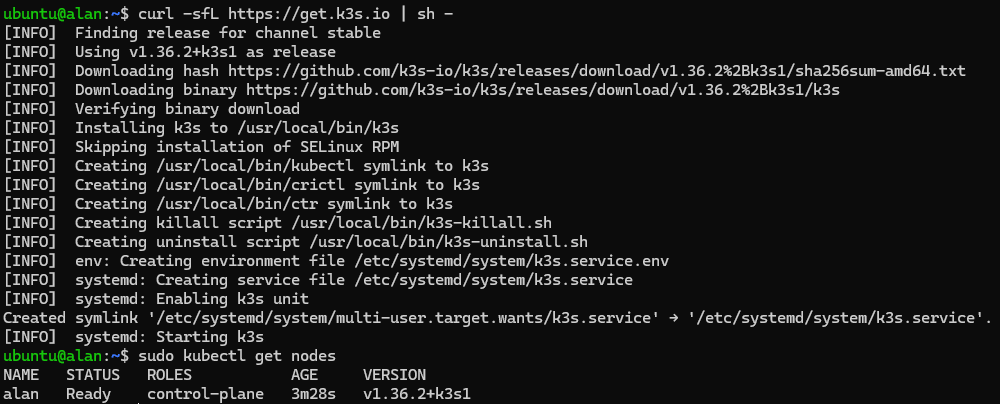

Setting up k3s and installing Helm#
Setting up k3s#
The first thing you need to do is set up a virtual machine, this will be used as Control Plane for the k3s cluster (read the note below). For a guide on how to create a virtual machine or an LXC container, check how to deploy a container.
Note
It is recommended to use a virtual machine to install k3s, using an LXC container would most probably bring issues.
To install k3s, you just have to execute the command:
curl -sfL https://get.k3s.io | sh -
To verify a successful installation, you can launch some simple command like:
sudo kubectl get nodes
The whole output should look like this:

Configuring kubectl access#
k3s writes its kubeconfig file to /etc/rancher/k3s/k3s.yaml, readable only
by root. This step configures kubectl access for your regular user, and is
required for the following sections of this guide, where Helm needs to reach
the cluster without using sudo.
Copy the kubeconfig to the default location and fix its ownership:
mkdir -p ~/.kube
sudo cp /etc/rancher/k3s/k3s.yaml ~/.kube/config
sudo chown $USER:$USER ~/.kube/config
On k3s, kubectl is usually a symlink to the k3s binary itself, which does
not fall back to ~/.kube/config like standard kubectl does. You must
also export KUBECONFIG explicitly, or commands will keep failing with a
permission error even after copying the file:
echo 'export KUBECONFIG=$HOME/.kube/config' >> ~/.bashrc
source ~/.bashrc
Verify it worked:
kubectl get nodes
The output should be the same as before.
Installing Helm#
To install Helm execute:
curl https://raw.githubusercontent.com/helm/helm/main/scripts/get-helm-3 | bash